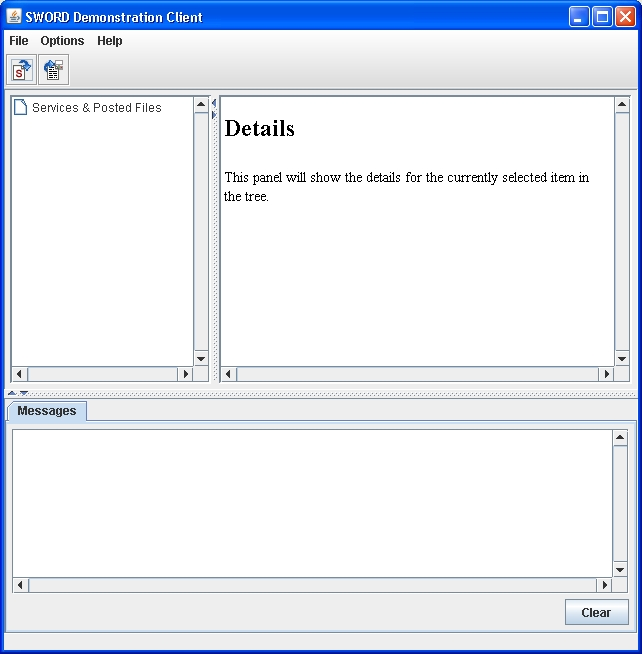
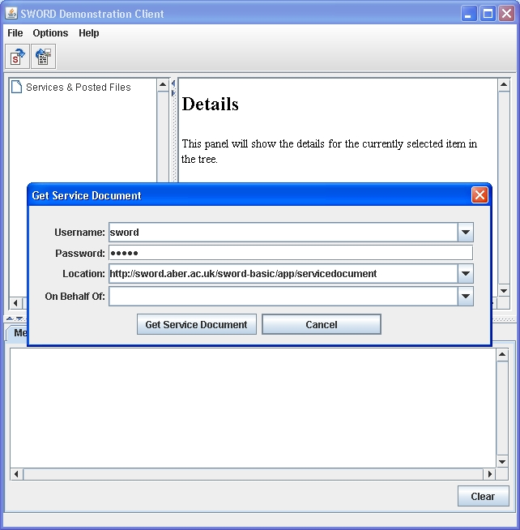
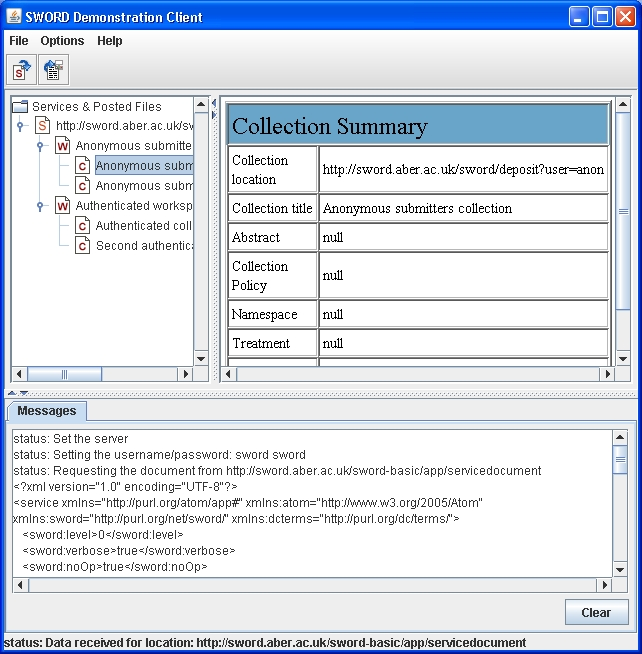
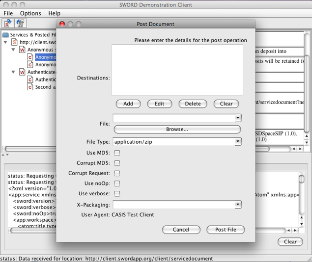
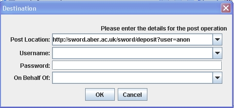
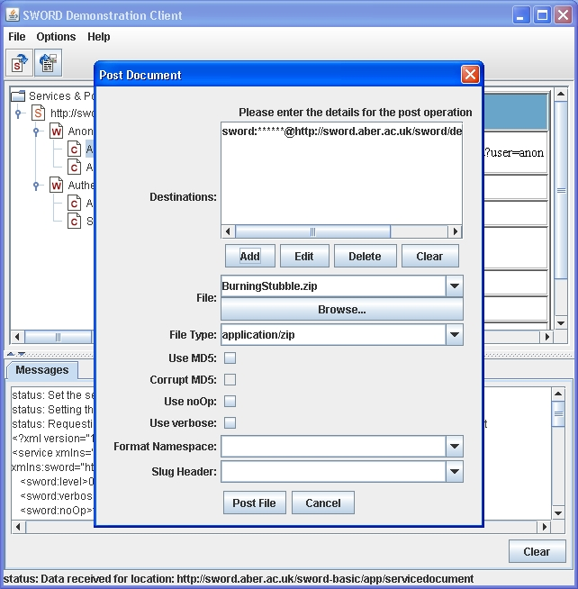
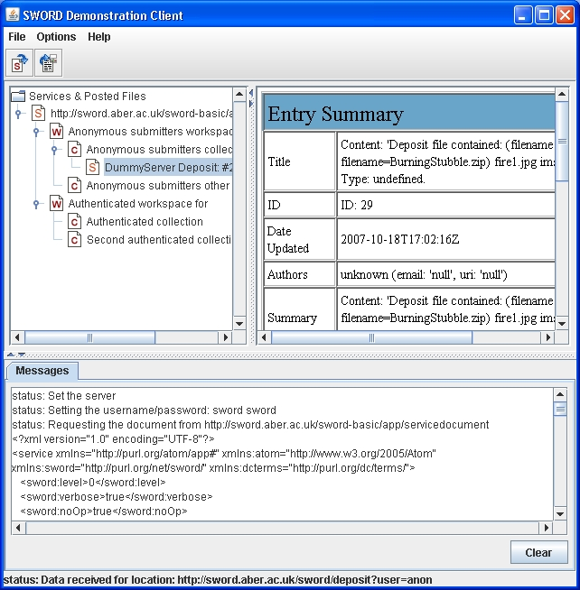

The GUI Client mode displays a graphical user interface for you to access service documents and post content to repositories. This page describes the main features for this mode.
To run the tool in GUI mode, simply double click the JAR file or run java -jar swordclient1.1.jar. When the tool starts, the following screen is displayed.

The tool has two main operations: request a Service Document and Post a file. These operations are activated by selecting the appropriate button in the toolbar.
The content in the screen is divided into three areas:
Select the Add Service button in the toolbar. The following dialog is displayed.

Enter the details and press the Get Service Document button. If there is an error, a dialog will be displayed. Otherwise, the results are shown in the tree, as shown below:

The top level item (which is a child of the Services node) shows the service details. This service contains two workspaces, each of which contain one Collection. A Collection node is selected. The details are displayed in the right-hand panel.
Select the Post button in the toolbar or the Post operation from the File menu. The following dialog is displayed.

The Post operation can post the same file to several different repositories. The Destinations list shows any destination repositories that have been specified. The list is empty by default. Press the Add button to display the Destination dialog; the screen is shown below.

Enter the details for the repository location. Press OK to add the entry. The entry is shown on the main Post Document dialog.

You can add and edit multiple destinations. Add the other information and press Post File to start the post process.
The entry is added into the tree. If the destination collection is already displayed in the tree (as a result of requesting a service document) the successful post response will be shown as a child of the collection. Otherwise, the post will be shown as child of the main Services & Posted Files node. An example file display is shown below.
Certain values for the Service and Post dialogs can be pre-configured in a properties file. The file is SwordClient.properties and is located in the same directory as the swordclient.jar file. The file contains labels for the areas that can be configured. The value on the right of the = character is a comma separated list. The values are added into the relevant combo boxes on the dialogs. The property file is only read as the tool starts. If you make any changes to the properties, restart the application. You can also edit the values from with the GUI client by selecting Options > Edit Properties. A dialog is displayed. Change the necessary values and press OK. The changes are saved to the properties file when the application closes.
By default, the tool will grab debug output. This can be viewed in the Debug panel - to show the panel select Show Debug Panel from the Options menu. This will redirect all stdout and stderr to the panel. To disable this, and allow output to go to the console, specify -nocapture when running the tool.
The tool uses Log4J to produce log messages. You can configure this by modifying the log4j.properties file in the root directory of the application. The distributed configuration is:
log4j.rootLogger=DEBUG, stdout log4j.appender.stdout=org.apache.log4j.ConsoleAppender log4j.appender.stdout.layout=org.apache.log4j.PatternLayout log4j.appender.stdout.layout.ConversionPattern=%5p [%c] %m%n log4j.logger.httpclient.wire.header=INFO log4j.logger.httpclient.wire.content=INFO log4j.logger.org.apache.commons.httpclient=INFO
You can view more detail by adjusting the INFO for (httpclient) to DEBUG on the final two lines. This change must be made before running the application.